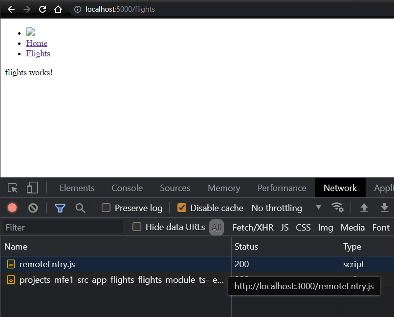

其實這觀念在去年由 Manfred Steyer (Angular GDE) 提出來，並花很多心力在研究這一塊的作法，一年過去後因為公司上有可能會使用到這樣的情境，所以就先來研究一下，但也因為晚了一年，現在很多工具和環境上已經好很多，而且該採的雷很多前輩都踩過了，這一篇筆記就是稍微整理一下如何從無到有的將 Angular 環境給設定起來
Requirement
- Angular 12
設定
-
建立一個空的 ng application。
1
ng new ng-mfe --create-application=false
-
建立一個 host (shell) application
1
ng g application shell --routing
-
建立一個 remote application
1
ng g application mfe1 --routing
-
為這兩個 application 加入
@angular-architects/module-federation套件1
2ng add @angular-architects/module-federation --project shell --port 5000
ng add @angular-architects/module-federation --project mfe1 --port 3000- 這時候會產生 webpack.config.js 檔案: 用來設定 remote module 使用
到這邊算是基本完成套件的安裝，接下來就是一些 module/component 的設定
-
在
mfe1application 中新增一個FlightsModule1
ng g m flights --project=mfe --routing
-
設定
webpack.config.js1
2
3
4
5
6
7
8
9
10
11
12
13
14
15
16
17
18
19
20
21
22
23
24
25
26
27
28
29
30
31
32
33
34
35
36
37
38
39
40
41
42
43
44
45
46
47const ModuleFederationPlugin = require("webpack/lib/container/ModuleFederationPlugin");
const mf = require("@angular-architects/module-federation/webpack");
const path = require("path");
const share = mf.share;
const sharedMappings = new mf.SharedMappings();
sharedMappings.register(
path.join(__dirname, '../../tsconfig.json'),
[/* mapped paths to share */]);
module.exports = {
output: {
uniqueName: "mfe1",
publicPath: "auto"
},
optimization: {
runtimeChunk: false
},
resolve: {
alias: {
...sharedMappings.getAliases(),
}
},
plugins: [
new ModuleFederationPlugin({
// For remotes (please adjust)
name: "mfe1",
filename: "remoteEntry.js",
exposes: {
"./flightModules": "./projects/mfe1/src/app/flights/flights.module.ts",
},
shared: share({
"@angular/core": { singleton: true, strictVersion: true, requiredVersion: 'auto' },
"@angular/common": { singleton: true, strictVersion: true, requiredVersion: 'auto' },
"@angular/common/http": { singleton: true, strictVersion: true, requiredVersion: 'auto' },
"@angular/router": { singleton: true, strictVersion: true, requiredVersion: 'auto' },
...sharedMappings.getDescriptors()
})
}),
sharedMappings.getPlugin()
],
};- line 28: host 載入時的
remoteName - line 29: webpack 要產生的 file name
- line 31: expose 的
module名稱及對應的 module 檔案
- line 28: host 載入時的
-
在 host (shell) 的路由檔設定要
lazyloading路徑1
2
3
4
5
6
7
8
9
10
11
12
13
14
15
16
17
18
19
20
21
22
23import { loadRemoteModule } from '@angular-architects/module-federation';
...
const URL = 'http://localhost:3000/remoteEntry.js';
const routes: Routes = [
{ path: '', component: HomeComponent, pathMatch: 'full' },
{
path: 'flights',
loadChildren: () =>
loadRemoteModule({
remoteEntry: URL,
remoteName: 'mfe1',
exposedModule: './flightModule',
}).then((m) => m.FlightsModule),
},
];
({
imports: [RouterModule.forRoot(routes)],
exports: [RouterModule],
})
export class AppRoutingModule {}- line 7 ~ 15 是標準 Lazy loading 的寫法，而 line 10 從原本的
import改寫成loadRemoteModule即可載入遠端的 module 檔案 remoteEmtry設定遠端主機位置及參考檔案，檔名為上一個步驟中所設定的檔名remoteName為上一步驟所設定的nameexposedModule為上一步驟所設定的 exposes 內的某一個key
- line 7 ~ 15 是標準 Lazy loading 的寫法，而 line 10 從原本的
最後在調整一下 host 的 AppComponent 的 HTML 內容，例如加上連結到 flights module 等，到這邊算完成一個最小完成單位，可以將兩個 applications 跑起來後看一下執行結果

問題探討
看起來一起都很簡單，但仔細思考後，其實還有很多東西要考慮，例如各 module 間的版本如何控制、如何共用狀態、部屬的相依性等，這些都是很實際的問題，等著下一篇筆記再來研究吧